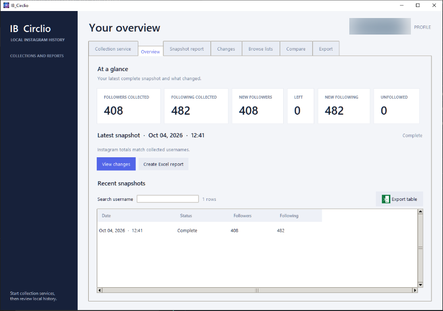
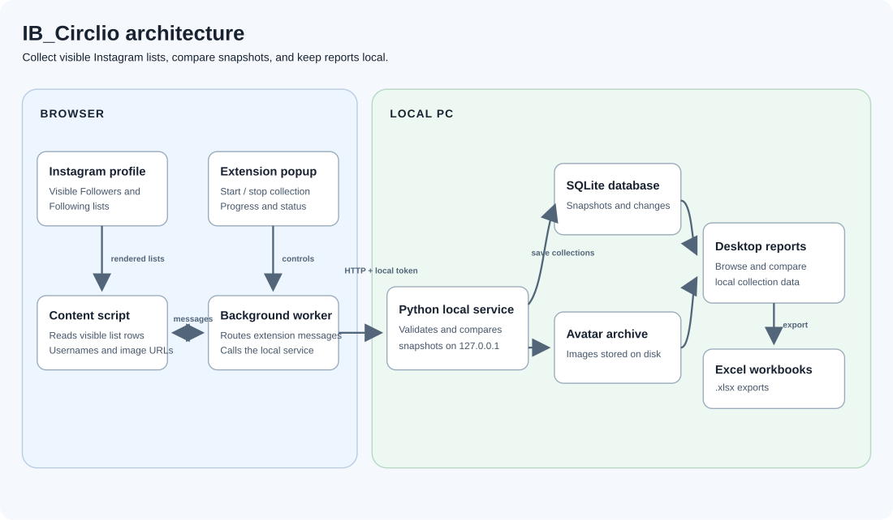

Collect visible lists
Start a collection from the browser extension while signed in. It reads the profile’s rendered Followers and Following dialogs and shows collection progress.
IB_Circlio combines a browser extension with a Windows desktop app to collect visible Followers and Following lists, compare timestamped snapshots, and export reports—while keeping collection history on your own PC.
Free and open source · Windows desktop app · Browser extension · Local SQLite database

Start a collection from the browser extension while signed in. It reads the profile’s rendered Followers and Following dialogs and shows collection progress.
Save timestamped observations and compare complete snapshots to review usernames added to or removed from either list.
Collection records and membership changes are stored in SQLite on your PC. Available profile pictures can be archived in local files.
Search and filter saved lists, review changes and comparisons, and export formatted Excel workbooks.

IB_Circlio uses a local service and SQLite database; it does not provide a cloud account or hosted database. Collection is based on what Instagram renders in your signed-in browser. It cannot recover changes from before your first snapshot or guarantee that every account was loaded by the page.
The project is an independent tool and is not affiliated with, endorsed by, or sponsored by Instagram or Meta.
Download the current Windows release for the portable app and browser extension. For setup instructions, requirements, screenshots, database details, and the local data reset utility, see the project README.